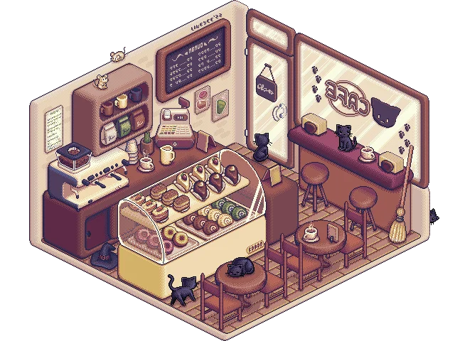

Get To Know More
Grade 12
Graduation Project
Created with
HTML, CSS and JavaScript
As a high school student who always enjoyed finding ways to make learning more fun, I wanted to create an experience that helps people associate studying with fun rather than stress. My goal for this project was to build an accessible, all‑in‑one study hub that includes features like a Pomodoro timer, a Spotify embed for music, and a simple to‑do list. Together, these tools create a supportive environment that helps users stay focused and motivated. While the current version is a simple prototype, it represents the first step toward my larger vision: developing a fully interactive, game‑like study experience that encourages productivity through engagement and fun. This project is something I plan to continue expanding and improving over time.